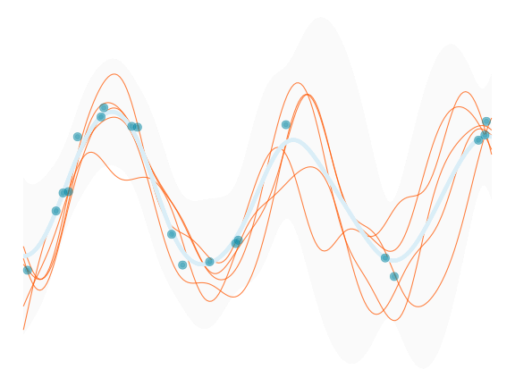
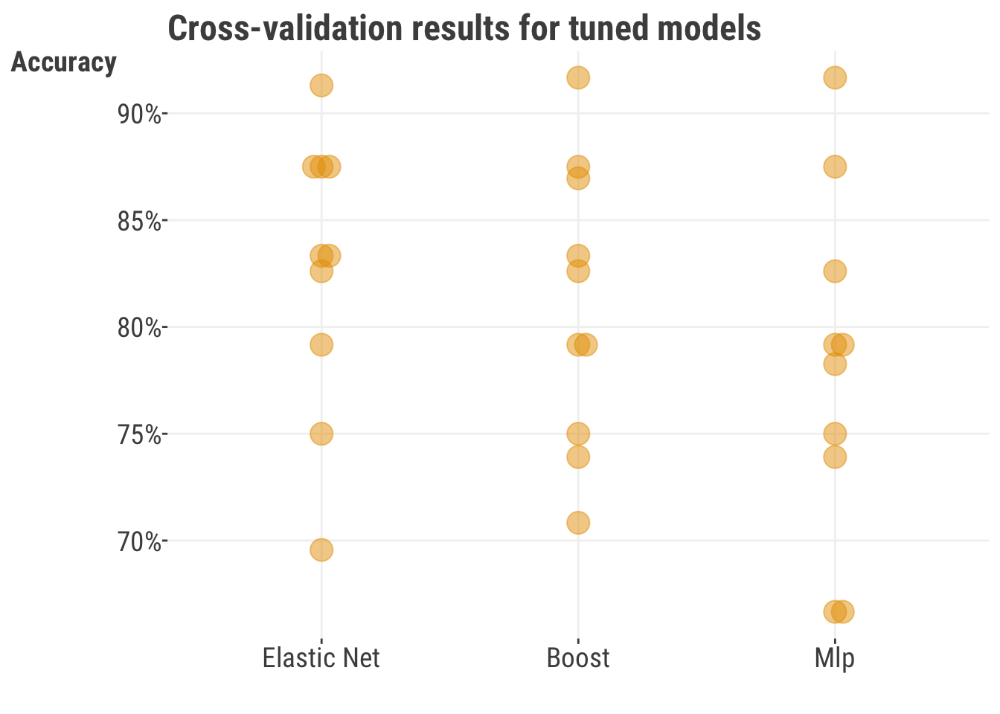

import pandas as pd
import numpy as np
from sklearn.linear_model import LogisticRegression
from sklearn.model_selection import cross_validate, RandomizedSearchCV, train_test_split
from sklearn.metrics import accuracy_score
from sklearn.inspection import PartialDependenceDisplay
from sklearn.neural_network import MLPClassifier
from lightgbm import LGBMClassifier9 Common Models in Machine Learning

Before really getting into some machine learning models, let’s get one thing straight from the outset: any model may be used in machine learning, from a standard linear model to a deep neural network. The key focus in ML is on performance, and generally we’ll go with what works. This means that the modeler is often less concerned with the interpretation of the model, and more with the ability of the model to predict well on new data, but as we’ll see we can do both if desired. In this chapter, we will explore some of the more common machine learning models and techniques.
9.1 Key Ideas
The take home messages from this section include the following:
- Any model can be used with machine learning
- A good and simple baseline is essential for interpreting your performance results
- One only needs a small set of tools (models) to go very far with machine learning
9.1.1 Why this matters
Having the right tools in data science saves time and improves results, and using well-known tools means you’ll have plenty of resources for help. It also allows you to focus more on the data and the problem, rather than the details of the model. A simple model might be all you need, but if you need something more complex, these models can still provide a performance benchmark.
9.1.2 Good to Know
Before diving in, it’d be helpful to be familiar with the following:
9.2 General Approach
Let’s start with a general approach to machine learning to help us get some bearings. Here is an example outline of the process we could take. This incorporates some of the ideas we also cover in other chapters, and we’ll demonstrate most of this in the following sections.
- Define the problem, including the target variable(s)
- Select the model(s) to be used, including one baseline model
- Define the performance objective and metric(s) used for model assessment
- Define the search space (parameters, hyperparameters) for those models
- Define the search method (optimization)
- Implement some sort of validation technique and collect the corresponding performance metrics
- Evaluate the results on unseen data with the chosen model
- Interpret the results
Here is a more concrete example:
- Define the problem: predict the probability of heart disease given a set of features
- Select the model(s) to be used: ridge regression, standard regression with no penalty as baseline
- Define the objective and performance metric(s): RMSE, R-squared
- Define the search space (parameters, hyperparameters) for those models: penalty parameter
- Define the search method (optimization): grid search
- Implement some sort of cross-validation technique: 5-fold cross-validation
- Evaluate the results on unseen data: RMSE on test data
- Interpret the results: the ridge regression model performed better than the baseline model, and the coefficients tell us something about the nature of the relationship between the features and the target
As we go along in this chapter, we’ll see most of this in action. So let’s get to it!
9.3 Data Setup
For our demonstration here, we’ll use the heart disease dataset. This is a popular ML binary classification problem, where we want to predict whether a patient has heart disease, given information such as age, sex, resting heart rate etc (Section A.3).
There are two forms of the data - one which is mostly in raw form, and one that is purely numeric, where the categorical features are dummy coded and where numeric variables have been standardized (Section 10.2). The purely numeric version will allow us to forgo any additional data processing for some model/package implementations. We have also dropped the handful of rows with missing values. This form of the data will allow us to use any model and make direct comparisons later.
In this data, roughly 46% suffered from heart disease, so that is an initial baseline if we’re interested in accuracy- we could get 54% correct by just guessing the majority class of no disease. Hopefully we can do better than that!
df_heart = pd.read_csv('https://tinyurl.com/heartdiseaseprocessed')
df_heart_num = pd.read_csv('https://tinyurl.com/heartdiseaseprocessednumeric')
# convert appropriate features to categorical
for col in df_heart.select_dtypes(include='object').columns:
df_heart[col] = df_heart[col].astype('category')
X = df_heart_num.drop(columns=['heart_disease']).to_numpy()
y = df_heart_num['heart_disease'].to_numpy()
prevalence = np.mean(y)
majority = np.max([prevalence, 1 - prevalence])library(tidyverse)
df_heart = read_csv("https://tinyurl.com/heartdiseaseprocessed") |>
mutate(across(where(is.character), as.factor))
df_heart_num = read_csv("https://tinyurl.com/heartdiseaseprocessednumeric")
# for use with for mlr3
X = df_heart_num |>
as_tibble() |>
mutate(heart_disease = factor(heart_disease)) |>
janitor::clean_names() # remove some symbolsOne last thing, as we go along, performance metrics will vary depending on your setup (e.g. Python vs. R), package versions used, and other things. As such your results may not look exactly like these, and that’s okay! The important thing is to understand the concepts and how to apply them to your own data.
9.4 Beat the Baseline
Before getting carried away with models, we should have a good reference point for performance - a baseline model. The baseline model should serve as a way to gauge how much better your model performs over one that is simpler, probably more computationally efficient, more interpretable, and is still viable. It could also be a model that is sufficiently complex to capture something about the data you are exploring, but not as complex as the models you’re also interested in. Take a classification model for example, where we often use a logistic regression as a baseline. It is a viable model to begin answering some questions, but is often too simple to be adequately performant for many situations. We should be able to get better performance with more complex models, or there is little justification for using them.
9.4.1 Why do we do this?
Having a baseline model can help you avoid wasting time and resources implementing more complex tools, and to avoid mistakenly thinking performance is better than expected. It is probably rare, but sometimes relationships for the chosen features and target are mostly or nearly linear and have little interaction. In this case, no amount of fancy modeling will make complex feature targets exist if they don’t already. Furthermore, if our baseline is a more complex model that actually incorporates nonlinear relationships and interactions (e.g. a GAMM), you’ll often find that the more complex models often don’t significantly improve on it. As a last example, in time series settings, a moving average can often be a difficult baseline to beat, and so can be a good starting point.
So in general, you may find that the initial baseline model is good enough for present purposes, and you can then move on to other problems to solve, like acquiring data that is more predictive. This is especially true if you are working in a business setting where you have limited time and resources, but should be of mind in many other settings as well
9.4.2 How much better?
In many settings, it often isn’t enough to merely beat the baseline model. Your model should perform statistically better. For instance, if your advanced model accuracy is 75% and your baseline model’s accuracy is 73%, that’s great. But, it’s good to check if this 2% difference is statistically significant. Remember, accuracy and other metrics are estimates and come with uncertainty1. This means you can get a ranged estimate for them, as well as test whether they are different from one another (see Table 9.1). If the difference is not statistically significant, then it’s possible that there is no difference, and you should probably stick with the baseline model, or maybe try a different approach. Such a result means that the next time you run the model, the baseline may actually perform better, or at least you can’t be sure that it won’t.
| Sample Size | Lower Bound | Upper Bound | p-value |
|---|---|---|---|
| 1000 | −0.06 | 0.02 | 0.31 |
| 10000 | −0.03 | −0.01 | 0.00 |
| Confidence intervals are for the difference in proportions at values of .73 and .75, and p-values are for the difference in proportions. | |||
That said, in some situations any performance increase is worth it, and even if we can’t be certain a result is statistically better, any sign of improvement is worth pursuing. For example, if you are trying to predict the next word in a sentence, and your baseline is 10% accurate, and your complex model is 12% accurate, that’s a 20% increase over the baseline, and which may be significant in terms of user experience. You should still try and show that this is a consistent increase and not a fluke.
In other settings, you’ll need to make sure the cost is worth it. Is 2% worth millions of dollars? Six months of research? These are among many of the practical considerations you may have to make as well.
9.5 Penalized Linear Models
So let’s get on with some models already! Let’s use the classic linear model as our starting point for ML. We show explicitly how to estimate models like lasso and ridge regression in Section 5.8. Those work well as a baseline, and so should be in your ML modeling toolbox.
9.5.1 Elastic Net
Another common linear model approach is elastic net, which we also saw in Chapter 8. It combines two techniques: lasso and ridge regression. We will not show how to estimate elastic net by hand here, but all you have to know is that it combines the two penalties- one for lasso and one for ridge, along with a standard objective function for a numeric or categorical target. The relative proportion of the two penalties is controlled by a mixing parameter, and the optimal value for it is determined by cross-validation. So for example, you might end up with a 75% lasso penalty and 25% ridge penalty. In the end though, we’re just going to do a slightly fancier logistic regression!
Let’s apply this to the heart disease data. We are only doing simple cross-validation here to get a better performance assessment, but you are more than welcome to tune both the penalty parameter and the mixing ratio as we have demonstrated before (Section 8.7). We’ll revisit hyperparameter tuning towards the end of this chapter.
model_elastic = LogisticRegression(
penalty = 'elasticnet',
solver = 'saga',
l1_ratio = 0.5,
random_state = 42,
max_iter = 10000,
verbose = False,
)
# use cross-validation to estimate performance
model_elastic_cv = cross_validate(
model_elastic,
X,
y,
cv = 5,
scoring = 'accuracy',
)
# pd.DataFrame(model_elastic_cv) # default outputTraining accuracy: 0.828
Guessing: 0.539library(mlr3verse)
tsk_elastic = as_task_classif(
X,
target = "heart_disease"
)
model_elastic = lrn(
"classif.cv_glmnet",
nfolds = 5,
type.measure = "class",
alpha = 0.5
)
model_elastic_cv = resample(
task = tsk_elastic,
learner = model_elastic,
resampling = rsmp("cv", folds = 5)
)
# model_elastic_cv$aggregate(msr('classif.acc')) # default outputTraining Accuracy: 0.825
Guessing: 0.539So we’re starting off with what seems to be a good model. Our average accuracy across the validation sets is definitely doing better than guessing, an increase of almost 79%! Now let’s see if we can do better with other models!
9.5.2 Strengths & weaknesses
Strengths
- Intuitive approach. In the end, it’s still just a standard regression model you’re already familiar with.
- Widely used for many problems. Lasso/Ridge/ElasticNet would be fine to use in any setting you would use linear or logistic regression.
- A good baseline for tabular data problems.
Weaknesses
- Does not automatically seek out interactions and non-linearity, and as such will generally not be as predictive as other techniques.
- Variables have to be scaled or results will largely reflect data types.
- May have interpretability issues with correlated features.
9.5.3 Additional thoughts
Using penalized regression is a very good default method in the tabular data setting, and is something to strongly consider for more interpretative model settings like determining causal effects. These approaches predict better on new data than their standard, non-regularized complements, so they provide a nice balance between interpretability and predictive power. However, in general they are not going to be as strong of a method as others typically used in the machine learning world, and may not even be competitive without a lot of feature engineering. If prediction is all you care about, you’ll likely want to try something else.
9.6 Tree-based Models
Let’s move beyond standard linear models and get into a notably different type of approach. Tree-based methods are a class of models that are very popular in machine learning, and for good reason, they work very well. To get a sense of how they work, consider the following classification example where we want to predict a binary target as ‘Yes’ or ‘No’.
We have two numeric features, \(X_1\) and \(X_2\). At the start, we take \(X_1\) and make a split at the value of 5. Any observation less than 5 on \(X_1\) goes to the right with a prediction of No. Any observation greater than or equal to 5 goes to the left, where we then split based on values of \(X_2\), and specifically at the value of 3. Any observation less than 3 (and greater than or equal to 5 on \(X_1\)) goes to the right with a prediction of Yes. Any observation greater than or equal to 3 (and greater than or equal to 5 on \(X_1\)) goes to the left with a prediction of No. So in the end, we see that an observation that is relatively lower on \(X_1\), or relatively higher on both, results in a prediction of No. On the other hand, an observation that is high on \(X_1\) and low on \(X_2\) results in a prediction of Yes.
This is a simple example, but it illustrates the core idea of a tree-based model, where the tree reflects the total process, and branches are represented by the splits going down, ultimately ending at leaves where predictions are made. We can also think of the tree as a series of if-then statements, where we start at the top and work our way down until we reach a leaf node, which is a prediction for all observations that qualify for that leaf.
If we just use a single tree, this would be the most interpretable model we could probably come up with. It also incorporates nonlinearities (multiple branches on a single feature), interactions (branches across features), and feature selection all in one (some features may not result in useful splits for the objective). However, a single tree is not a very stable model unfortunately, and so does not generalize well. For example, just a slight change in data, or even just starting with a different feature, might produce a very different tree2.
The solution to that problem is straightforward though - by using the power of a bunch of trees, we can get predictions for each observation from each tree, and then average the predictions, resulting in a most stable estimate. This is the concept behind both random forests and gradient boosting, which can be seen as different algorithms to produce a bunch of trees. They are also considered types of ensemble models, which are models that combine the predictions of multiple models, to ultimately produce a single prediction for each observation. In this case each tree serves as a model.
Random forests (RF) and boosting methods (GB) are very easy to implement, to a point. However, there are typically several hyperparameters to consider for tuning. Here are just a few to think about:
- Number of trees
- Learning rate (GB)
- Maximum depth of each tree
- Minimum number of observations in each leaf
- Number of features to consider at each tree/split
- Regularization parameters (GB)
- Out-of-bag sample size (RF)
For these models, the number of trees and learning rate play off of each other. Having more trees allows for a smaller rate3, which might improve the model but will take longer to train. However, it can lead to overfitting if other steps are not taken.
The depth of each tree refers to how many levels we allow the model to branch out, and is a crucial parameter. It controls the complexity of each tree, and thus the complexity of the overall model- less depth helps to avoid overfitting, but if the depth is too shallow, you won’t be able to capture the nuances of the data. The minimum number of observations in each leaf is also important for similar reasons.
It’s also generally a good idea to take a random sample of features for each tree (or possibly even each branch), to also help reduce overfitting, but it’s not obvious what proportion to take. The regularization parameters are typically less important in practice, but help reduce overfitting as in other modeling circumstances. As with hyperparameters in other model settings, you’ll use something like cross-validation to settle on final values.
9.6.1 Example with LightGBM
Here is an example of gradient boosting with the heart disease data. Although boosting methods are available in scikit-learn for Python, in general we recommend using the lightgbm or xgboost packages directly for boosting implementation, which have a sklearn API anyway (as demonstrated). Also, they both provide R and Python implementations of the package, making it easy to not lose your place when switching between languages. We’ll use lightgbm here, but xgboost is also a very good option 4.
model_boost = LGBMClassifier(
n_estimators = 1000,
learning_rate = 1e-3,
max_depth = 5,
verbose = -1,
random_state=42,
)
model_boost_cv = cross_validate(
model_boost,
df_heart.drop(columns='heart_disease'),
df_heart['heart_disease'],
cv = 5,
scoring='accuracy',
)
# pd.DataFrame(model_boost_cv)Training accuracy: 0.835
Guessing: 0.539Note that as of writing, the mlr3 implementation of lightgbm doesn’t seem to handle factors even though the lightgbm R package does. So we’ll use the numeric version of the data here.
library(mlr3verse)
# for lightgbm, you need mlr3extralearners and lightgbm package installed
# we suggest the latest available from github
# remotes::install_github("mlr-org/mlr3extralearners@*release")
library(mlr3extralearners)
set.seed(1234)
# Define task
# For consistency we use X, but lgbm can handle factors and missing data
# and so we can use the original df_heart if desired
tsk_boost = as_task_classif(
df_heart, # can use the 'raw' data
target = "heart_disease"
)
# Define learner
model_boost = lrn(
"classif.lightgbm",
num_iterations = 1000,
max_depth = 5,
learning_rate = 1e-3
)
# Cross-validation
model_boost_cv = resample(
task = tsk_boost,
learner = model_boost,
resampling = rsmp("cv", folds = 5)
)Training Accuracy: 0.804
Guessing: 0.539So here we have a model that is also performing well, though not significantly better or worse than our elastic net model. For most situations, we’d expect boosting to do better, but this shows why we want a good baseline or simpler model for comparison. We’ll revisit hyperparameter tuning using this model later.
9.6.2 Strengths & weaknesses
Random forests and boosting methods, though not new, are still ‘state of the art’ in terms of performance on tabular data like the type we’ve been using for our demos here. As of this writing, you’ll find that it will usually take considerable effort to beat them, though many have tried with many deep learning models.
Strengths
- A single tree is highly interpretable.
- Easily incorporates features of different types (the scale of numeric features, or using categorical features*, doesn’t matter).
- Tolerance to irrelevant features.
- Some tolerance to correlated inputs.
- Handling of missing values. Missing values are just another value to potentially split on5.
Weaknesses
- Honestly few, but like all techniques, it might be relatively less predictive in certain situations. There is no free lunch.
- It does take more effort to tune relative to linear model methods.
9.7 Deep Learning and Neural Networks
Deep learning has fundamentally transformed the world of data science, and the world itself. It has been used to solve problems in image detection, speech recognition, natural language processing, and more, from assisting with cancer diagnosis to summarizing entire novels. As of now, it is not a panacea for every problem, and is not always the best tool for the job, but it is an approach that should be in your toolbox. Here we’ll provide a brief overview of the key concepts behind neural networks, the underlying approach to deep learning, and then demonstrate how to implement a simple neural network to get things started.
9.7.1 What is a neural network?
Neural networks form the basis of deep learning models. They have actually been around a while - computationally and conceptually going back decades67. Like other models, they are computational tools that help us understand how to get outputs from inputs. However, they weren’t quickly adopted due to computing limitations, similar to the slow adoption of Bayesian methods. But now neural networks, or deep learning more generally, have recently become the go-to method for many problems.
9.7.2 How do they work?
At its core, a neural network can be seen as a series of matrix multiplications and other operations to produce combinations of features, and ultimately a desired output. We’ve been talking about inputs and outputs since the beginning (Section 2.3), but neural networks like to put a lot more in between the inputs and outputs than we’ve seen with other models. However, the core operations are often no different than what we’ve done with a basic linear model, and sometimes even simpler! But the combinations of features they produce can represent many aspects of the data that are not easily captured by simpler models.
One notable difference from models we’ve been seeing is that neural networks implement multiple combinations of features, where each combination is referred to as hidden nodes or units8. In a neural network, each feature has a weight, just like in a linear model. These features are multiplied by their weights and then added together. But we actually create multiple such combinations, as depicted in the ‘H’ or ‘hidden’ nodes in the following visualization.
The next phase is where things can get more interesting. We take those hidden units and add in nonlinear transformations before moving deeper into the network. The transformations applied are typically referred to as activation functions9. So, the output of the current (typically linear) part is transformed in a way that allows the model to incorporate nonlinearities. While this might sound new, this is just like how we use link functions in generalized linear models (Section 6.2). Furthermore, these multiple combinations also allow us to incorporate interactions between features.
But we can go even further! We can add more layers, and more nodes in each layer, to create a deep neural network. We can also add components specific to certain types of processing, have some parts only connected to certain other parts and more. The complexity really is only limited by our imagination, and computational power! This is what helps make neural networks so powerful - given enough nodes and layers they can potentially approximate any function. Ultimately though, the feature inputs become an output or multiple outputs that can then be assessed in the similar ways as other models.
Before getting carried away, let’s simplify things a bit by returning to some familiar ground. Consider a logistic regression model. There we take the linear combination of features and weights, and then apply the sigmoid function (inverse logit) to it, and that is the output of the model that we compare to our observed target.
We can revisit a plot we saw earlier (Figure 3.5) to make things more concrete. The input features are \(X_1\), \(X_2\), and \(X_3\), and the output is the probability of a positive outcome of a binary target. The weights are \(w_1\), \(w_2\), and \(w_3\), and the bias10 is \(w_0\). The hidden node is just our linear predictor which we can create via matrix multiplication of the feature matrix and weights. The sigmoid function is the activation function, and the output is the probability of the chosen label.

This shows that we can actually think of logistic regression as a very simple neural network, with a linear combination of the inputs as a single hidden node and a sigmoid activation function adding the nonlinear transformation. Indeed, the earliest multilayer perceptron models were just composed of multiple layers of logistic regressions!
9.7.3 Trying it out
For simplicity we’ll use similar tools as before. Our model is a multi-layer perceptron (MLP), which is a model like the one we’ve been depicting. It consists of multiple hidden layers of varying sizes, and we can incorporate activation functions as we see fit.
Do know this would be considered a bare minimum approach for a neural network, and generally you’d need to do more. To begin with, you’d want to tune the architecture, or structure of hidden layers. For example, you might want to try more layers, as well as ‘wider’ layers, or more nodes per layer. Also, as noted in the data discussion, we’d usually want to use embeddings for categorical features as opposed to the one-hot approach used here (Section 10.2.2)11.
For our example, we’ll use the data with one-hot encoded features. For our architecture, we’ll use three hidden layers with 200 nodes each. As noted, these and other settings are hyperparameters that you’d normally prefer to tune.
For our demonstration we’ll use sklearn’s builtin MLPClassifier. We set the learning rate to 0.001. We’ll also use a validation set of 20% of the data to help with early stopping. We set an adaptive learning rate, which is a way to automatically adjust the learning rate as the model trains. The ReLU activation function is default. We’ll also use the nesterov momentum approach, which is a way to help the model avoid local minima. We use a warm start, which allows us to train the model in stages, which is useful for early stopping. We’ll also set the validation fraction, which is the proportion of data to use for the validation set. And finally, we’ll use shuffle to randomly select observations for each batch.
model_mlp = MLPClassifier(
hidden_layer_sizes = (200, 200, 200),
learning_rate = 'adaptive',
learning_rate_init = 0.001,
shuffle = True,
random_state = 123,
warm_start = True,
nesterovs_momentum = True,
validation_fraction = .2,
verbose = False,
)
# with the above settings, this will take a few seconds
model_mlp_cv = cross_validate(
model_mlp,
X,
y,
cv = 5
)
# pd.DataFrame(model_mlp_cv) # default outputTraining accuracy: 0.818
Guessing: 0.539For R, we’ll use mlr3torch, which calls pytorch directly under the hood. We’ll use the same architecture as was done with the Python example. It uses the ReLU activation function as a default. We’ll also use adam as the optimizer, which is a popular choice and the default for the sklearn approach also. We’ll also use cross entropy as the loss function, which is the same as the log loss objective function used in logistic regression and other ML classification models. We use a batch size of 16, which is the number of observations to use for each batch of training. We’ll also use epochs of 200, which is the number of times to train on the entire dataset. We’ll also use predict type of prob, which is the type of prediction to make. Finally, we’ll use both logloss and accuracy as the metrics to track. As specified, this took over a minute.
library(mlr3torch)
learner_mlp = lrn(
"classif.mlp",
# defining network parameters
layers = 3,
d_hidden = 200,
# training parameters
batch_size = 16,
epochs = 50,
# Defining the optimizer, loss, and callbacks
optimizer = t_opt("adam", lr = 1e-3),
loss = t_loss("cross_entropy"),
# # Measures to track
measures_train = msrs(c("classif.logloss")),
measures_valid = msrs(c("classif.logloss", "classif.ce")),
# predict type (required by logloss)
predict_type = "prob",
seed = 123
)
tsk_mlp = as_task_classif(
x = X,
target = 'heart_disease'
)
# this will take a few seconds depending on your chosen settings and hardware
model_mlp_cv = resample(
task = tsk_mlp,
learner = learner_mlp,
resampling = rsmp("cv", folds = 5),
)
model_mlp_cv$aggregate(msr("classif.acc")) # default outputTraining Accuracy: 0.842
Guessing: 0.539This neural network model actually did pretty well, and we’re on par with our accuracy as we were with the other two models. This is somewhat surprising given the nature of the data- small number of observations with different data types- a type of situation in which neural networks don’t usually do as well as others. Just goes to show, you never know until you try!
9.7.4 Strengths & weaknesses
Strengths
- Good prediction generally.
- Incorporates the predictive power of different combinations of inputs.
- Some tolerance to correlated inputs.
- Can be added as a component to other deep learning models.
Weaknesses
- Susceptible to irrelevant features.
- Doesn’t outperform other methods that are (currently) easier to implement on tabular data.
9.8 A Tuned Example
We noted in the chapter on machine learning concepts that there are often multiple hyperparameters we are concerned with for a given model (Section 8.7). We had hyperparameters for each of the models in this chapter also. For the elastic net model, we might want to tune the penalty parameters and the mixing ratio. For the boosting method, we might want to tune the number of trees, the learning rate, the maximum depth of each tree, the minimum number of observations in each leaf, and the number of features to consider at each tree/split. And for the neural network, we might want to tune the number of hidden layers, the number of nodes in each layer, the learning rate, the batch size, the number of epochs, and the activation function. There is plenty to explore!
Here is an example using the boosting model. We’ll tune the number of trees, the learning rate, the minimum number of observations in each leaf, and the maximum depth of each tree. We’ll use a randomized search across the parameter space to sample from the set of hyperparameters, rather than searching every possible combination as in a grid search. This is a good approach when you have a lot of hyperparameters to tune, and/or when you have a lot of data.
# train-test split
X_train, X_test, y_train, y_test = train_test_split(
df_heart.drop(columns='heart_disease'),
df_heart_num['heart_disease'],
test_size = 0.2,
random_state = 42
)
model_boost = LGBMClassifier(
verbose = -1
)
param_grid = {
'n_estimators': [500, 1000],
'learning_rate': [1e-3, 1e-2, 1e-1],
'max_depth': [3, 5, 7, 9],
'min_child_samples': [1, 5, 10],
}
# this will take a few seconds
model_boost_cv_tune = RandomizedSearchCV(
model_boost,
param_grid,
n_iter = 10,
cv = 5,
scoring = 'accuracy',
n_jobs = -1,
random_state = 42
)
model_boost_cv_tune.fit(X_train, y_train)
test_predictions = model_boost_cv_tune.predict(X_test)
accuracy_score(y_test, test_predictions)
Test Accuracy 0.817
Guessing: 0.539set.seed(1234)
library(mlr3verse)
library(rsample)
tsk_model_boost_cv_tune = as_task_classif(
df_heart,
target = "heart_disease"
)
split = partition(tsk_model_boost_cv_tune, ratio = .8)
lrn_lgbm = lrn(
"classif.lightgbm",
num_iterations = to_tune(c(500, 1000)),
learning_rate = to_tune(1e-3, 1e-1),
max_depth = to_tune(c(3, 5, 7, 9)),
min_data_in_leaf = to_tune(c(1, 5, 10))
)
model_boost_cv_tune = auto_tuner(
tuner = tnr("random_search"),
learner = lrn_lgbm,
resampling = rsmp("cv", folds = 5),
measure = msr("classif.acc"),
terminator = trm("evals", n_evals = 10)
)
model_boost_cv_tune$train(tsk_model_boost_cv_tune, row_ids = split$train)
model_boost_cv_tune$predict(tsk_model_boost_cv_tune, row_ids = split$test)$score(msr("classif.acc"))Test Accuracy: 0.864
Guessing: 0.539Looks like we’ve done a lot better than guessing. Even if we don’t do better than our previous model, we should feel better that we’ve done our due diligence in trying to find the best set of underlying parameters, rather than just going with defaults or what seems to work best.
9.9 Comparing Models
We can tune all the models and compare them head to head. We first split the same data into training and test sets (20% test). Then with training data, we tuned each model over different settings:
- Elastic net: penalty and mixing ratio
- Boosting: number of trees, learning rate, and maximum depth, etc.
- Neural network: number of hidden layers, number of nodes in each layer, etc.
After this, we used the tuned values to retrain on the complete training data set. At this stage it’s not necessary to investigate in most settings, but we show the results of the 10-fold cross-validation for the already-tuned models, to give a sense of the uncertainty in error estimation with a small sample like this. Even with the ‘best’ settings, we can see that there is definitely some variability across data splits.

When we look at the performance on the holdout set with our tuned models in the following table12, we see something you might be surprised about - the simplest model does really well! It is tied for or the best on three out of six metrics. Again, your results may vary depending on whether you used a seed, R vs. Python, and possibly other aspects of your environment.
| model | acc | tpr | tnr | f1 | ppv | npv |
|---|---|---|---|---|---|---|
| Elastic Net | 0.88 | 0.83 | 0.92 | 0.85 | 0.87 | 0.89 |
| Boost | 0.87 | 0.83 | 0.89 | 0.83 | 0.83 | 0.89 |
| MLP | 0.83 | 0.83 | 0.83 | 0.80 | 0.77 | 0.88 |
It’s important to note that none of these results are statistically different from each other. As an example, the elastic net model had an accuracy of 0.88, but the interval estimate for such a small holdout sample is very wide - from 0.77 to 0.95. The interval estimate for the difference in TPR between the elastic net and boosting models is from -0.21 to 0.2113. Again, don’t take this result too far, we’re dealing with a small data set and it is difficult to detect potentially complex relationships in such a setting. In addition, we could have done more to explore the parameter space of the models, but we’ll leave that for another time. But this was a good example of the importance of having an adequate baseline, and where complexity didn’t really help much, though all our approaches did well. In this case, any of these models would be a good choice for future prediction.
9.10 Interpretation
When it comes to machine learning, many models we use don’t have an easy interpretation, like with coefficients in a linear model. However, that doesn’t mean we can’t still figure out what’s going on. Let’s use the boosting model as an example.
9.10.1 Feature Importance
The default importance metric for a lightgbm model is the number of splits in which a feature is used across trees, and this will depend a lot on the chosen parameters of the best model. But there are other ways to think about what importance means that will be specific to a model, data setting, and ultimate goal of the modeling process. For this data and the model, depending on the settings, you might see that the most important features are age, cholesterol, and max heart rate.
# Get feature importances
best_model = model_boost_cv_tune.best_estimator_
best_model.feature_importances_
# you remember which feature is which, right? if not, do this:
pd.DataFrame({
'Feature': best_model.feature_name_,
'Importance': best_model.feature_importances_
}).sort_values('Importance', ascending=False)R shows the proportion of splits in which a feature is used across trees rather than the raw number.
# Get feature importances
model_boost_cv_tune$learner$importance()| Feature | value |
|---|---|
| num_major_vessels | 0.23 |
| age | 0.16 |
| thalassemia | 0.10 |
| st_depression | 0.10 |
Now let’s think about a visual display to aid our understanding. Here we show a partial dependence plot (Section 4.3.6) to see the effects of cholesterol and being male. From this we can see that males are expected to have a higher probability of heart disease, and that cholesterol has a positive relationship with heart disease, though this occurs mostly after midpoint for cholesterol (shown by vertical line). The plot shown is a prettier version of what you’d get with the following code, but the model predictions are the same.
PartialDependenceDisplay.from_estimator(
model_boost_cv_tune,
df_heart.drop(columns='heart_disease'),
features=['cholesterol', 'male'],
categorical_features=['male'],
percentiles=(0, .9),
grid_resolution=75
)For R we’ll use the iml package.
library(iml)
prediction = Predictor$new(
model_boost_cv_tune$model$learner,
data = df_heart,
type = 'prob',
class = 'yes'
)
# interaction plot, select a singe feature for a single feature plot
effect_dat = FeatureEffect$new(
prediction,
feature = c('cholesterol', 'male'),
method = "pdp",
)
effect_dat$plot(show.data = TRUE)9.11 Other ML Models for Tabular Data
When you research classical machine learning models for the kind of data we’ve been exploring, you’ll find a variety of methods. Popular approaches from the past include k-nearest neighbors regression, principal components regression, support vector machines (SVM), and more. You don’t see these used in practice as much though for several reasons:
- Some, like k-nearest neighbors regression, generally don’t predict as well as other models.
- Others, like linear discriminant analysis, make strong assumptions about how the data is distributed.
- Some models, like SVM, tend to work well only with ‘clean’ and well-structured data of the same type.
- Many of these models are computationally demanding, making them less practical for large datasets.
- Lastly, some of these models are less interpretable, making it hard to understand their predictions without an obvious gain in performance.
While some of these classical models might still work well in unique situations, when you have tools that can handle a lot of data complexity and predict very well (and usually better) like tree-based methods, there’s not much reason to use the historical alternatives. If you’re interested in learning more about them or think one of them is just ‘neat’, you could potentially use it as a baseline model. Alternatively, you could maybe employ them as part of an ensemble or stacked model, where you combine the predictions of multiple models to produce a single prediction. This is a common approach in machine learning, and is often used in Kaggle competitions.
There are also other methods that are more specialized, such as those for text, image, and audio data. We will provide an overview of these elsewhere (Chapter 9). As of this writing, the main research effort for new models for tabular data regards deep learning methods like large language models (LLMs). While typically used for text data, they can be adapted for tabular data as well. They are very powerful, but also computationally expensive. The issue is primarily whether a model can be devised that can consistently beat boosting and other approaches, and while it hasn’t happened yet, there is a good chance it will in the near future. For now, the best approach is to use the best model that works for your data, and to be open to new methods as they come along.
9.12 Wrapping Up
In this chapter we’ve provided a few common and successful models you can implement with much success in machine learning. You don’t really need much beyond these for tabular data unless your unique data condition somehow requires it. But a couple things are worth mentioning before moving on…
Feature engineering will typically pay off more in performance than the model choice.
Thinking hard about the problem and the data is more important than the model choice.
The best model is simply the one that works best for your situation.
You’ll always get more payoff by coming up with better features to use in the model, as well as just using better data that’s been ‘fixed’ because you’ve done some good exploratory data analysis. Thinking harder about the problem means you will waste less time going down dead ends, and you typically can find better data to use to solve the problem by thinking more clearly about the question at hand. And finally, it’s good to not be stuck on one model, and be willing to use whatever it takes to get things done efficiently.
9.12.1 The common thread
When it comes to machine learning, you can use any model you feel like, and this could be standard statistical models like we’ve covered elsewhere. Both boosting and neural networks, like GAMs and related techniques, can be put under a common heading of basis function models. GAMs with certain types of smooth functions are approximations of gaussian processes, and gaussian processes are equivalent to a neural network with an infinitely wide hidden layer (Neal (1996)). Even the most complicated deep learning model typically has components that involve feature combinations and transformations that we use in far simpler models.
9.12.2 Choose your own adventure
If you haven’t had much exposure to statistical approaches we suggest heading to any chapter of Part I. Otherwise, consider an overview of more machine learning techniques (Chapter 9), data (Chapter 10), or causal modeling (Chapter 11).
9.12.3 Additional resources
Additional resources include those mentioned in Section 8.9.3, but here are some more to consider:
- Google’s Course Decision Forests
- Interpretable ML (Molnar (2023))
- Interpretable Machine Learning with Python (Masis (2023))
- Machine Learning Q & AI (Raschka (2023))
Deep Learning:
- Common activation functions
- An overview of deep learning applications for tabular data by Michael (Clark (2021), Clark (2022))
- Dive into Deep Learning (Zhang et al. (2023))
- Fast AI course (Howard (2024))
9.13 Exercise
Tune a model of your choice to predict whether a movie is good or bad with the movie review data. Use the categorical target, and use one-hot encoded features if needed. Make sure you use a good baseline model for comparison!
There would be far less hype and wasted time if those in ML and DL research simply did this rather than just reporting the chosen metric of their model ‘winning’ against other models. It’s not that hard to do, yet most do not provide any ranged estimate for their metric, let alone test statistical differences from other models. You don’t even have to bootstrap many common metric estimates for binary classification since they are just proportions. It’d also be nice if they used a more meaningful baseline than logistic regression, but that’s a different story. And one more thing, ranks also have uncertainty. So just saying you’re #1 isn’t enough to prove it.↩︎
A single regression/classification tree actually could serve as a decent baseline model, especially given the interpretability, and modern methods try to make them more stable.↩︎
This is pretty much the same concept as with stochastic gradient in general. Larger learning rates allow for quicker parameter exploration, but may overshoot the optimal value. Smaller learning rates are more conservative, but may take longer to find the optimal value.↩︎
Some also prefer catboost. The authors have not actually been able to practically implement catboost in a setting where it was more predictive or as efficient/speedy as xgboost or lightgbm, but some have had notable success with it.↩︎
It’s not clear why most model functions still have no default for this sort of thing in 2024.↩︎
Most consider the scientific origin with McCulloch and Pitts (1943).↩︎
On the conceptual side, they served as a rudimentary model of neuronal functioning in the brain, and a way to understand how the brain processes information. The models sprung from the cognitive revolution, a backlash against the behaviorist approach to psychology, and used the computer as a metaphor for how the brain might operate.↩︎
The term ‘hidden’ is used because these nodes are between the input or output. It does not imply a latent/hidden variable in the sense it is used in structural equation or measurement models, but there is a lot of common ground. See the connection with principal components analysis for example(Section 9.2.1.2).↩︎
We have multiple options for our activation functions, and probably the most common activation function in deep learning is the rectified linear unit or ReLU. Other commonly used are the sigmoid function, which is exactly the same as what we used in logistic regression, the hyperbolic tangent function, variants of the ReLU, and of course the linear/identity function, which not to do any transformation at all.↩︎
It’s not exactly clear why computer scientists chose to call this the bias, but it’s the same as the intercept in a linear model, or conceptually as an offset or constant. It has nothing to do with the word bias as used in every other modeling context.↩︎
A really good tool for a standard MLP type approach with automatic categorical embeddings is
fastai’s tabular learner.↩︎This table was based on Python randomized CV search, but a similar R approach produced similar results, and they can both vary quite a bit even with just a random seed change.↩︎
We just used the
prop.testfunction in R for these values with the key question of whether these proportions are different. A lot of the metrics people look at from confusion matrices are proportions.↩︎